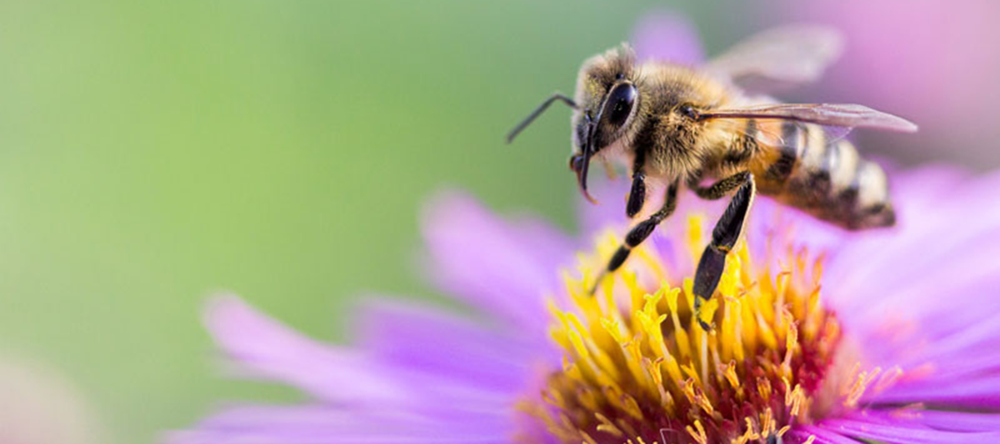

La pollinisation
Bien que la plupart des plantes soient hermaphrodites (à la fois mâle et femelle), la pollinisation est très importante car, de quelque nature qu'elle soit, mais surtout lorsqu'elle est entomophile (c'est-à-dire effectuée par les insectes), la pollinisation permet un meilleur brassage génétique. Celui-ci évite la consanguinité et donc la dégénérescence. Elle permet une plus grande diversité et une résistance accrue des plantes. La pollinisation peut prendre divers aspects. Elle se fait par le vent, l'eau et, bien sûr, par les abeilles, ses agents les plus zélés et les plus efficaces. Découvrez dans ce dossier les protagonistes et les différents modes de pollinisation ainsi que le rôle central de ce phénomène dans le maintien de la biodiversité.
Comment ça se passe au niveau des fleurs ?
Les plantes à fleurs ont une reproduction sexuée. La pollinisation est le transport des grains de pollen des gamètes mâles vers les stigmates, l’entrée de l'appareil génital femelle, d’une même fleur. L'organe mâle est l'étamine qui comprend le filet et l'anthère, qui contient les grains de pollen. L'organe femelle est le pistil qui comprend l'ovaire protégé par les sépales et dans lequel sont les ovules. L'ovaire est prolongé par un long tuyau, le style, qui se termine par un renflement gluant qui retiendra les grains de pollen : le stigmate. Si le grain de pollen est compatible, il germe en émettant un tube pollinique qui va dans l’ovaire déposer les spermatozoïdes dans un ovule. Il en résultera une fécondation, qui donnera une graine.
Pourquoi nos insectes assurent-ils la pollinisation ?
La majorité de la pollinisation est assurée par les insectes, 85% des plantes à fleurs dépendent directement d’eux. Les insectes ne jouent pas volontairement les intermédiaires dans les noces des plantes, ils les visitent pour assurer leur repas et dans certains cas celui de leurs larves. Le pollen, riche en protéines, est un aliment de choix. Produit en abondance par la plante, il peut être mangé sans problème car il restera toujours assez de grains pour féconder les fleurs. Mais l’attrait principal des fleurs réside dans le nectar sucré qu’elles sécrètent spécialement pour les insectes. C’est un échange de service: une nourriture très énergétique contre le transport du pollen. Les vives couleurs des fleurs, leurs dessins et leur parfum sont destinés aux pollinisateurs. Ce sont de véritables enseignes publicitaires pour les attirer vers une table bien garnie!.